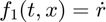
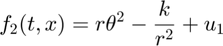
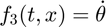
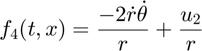
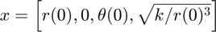

Linearization About An Equilibrium Point
Example showing linearization of a system about an equilibrium point.
Contents
Define Symbolic Variables
Define the state variables, input variables, and any constants.
syms r(t) diff(r) theta(t) diff(theta) u1 u2 syms k
Define the State Space Model
The state space model is defined by the equations:




sys = symss; sys.states = [r(t) diff(r) theta(t) diff(theta)]; sys.inputs = [u1 u2]; sys.f(1) = diff(r); sys.f(2) = r(t)*diff(theta)^2 - (k/r(t)^2) + u1; sys.f(3) = diff(theta); sys.f(4) = -((2*diff(r)*diff(theta))/r(t)) + (u2/r(t));
Linearize the System
Linearize the system about a given equilibrium point.

linsys = linearize(sys, [r(0), 0, theta(0), (k/r(0)^3)^(1/2)]);
The state matrix becomes:
linsys.A
ans = [ 0, 1, 0, 0] [ (3*k)/r(0)^3, 0, 0, 2*r(0)*(k/r(0)^3)^(1/2)] [ 0, 0, 0, 1] [ 0, -(2*(k/r(0)^3)^(1/2))/r(0), 0, 0]
While the input matrix becomes:
linsys.B
ans = [ 0, 0] [ 1, 0] [ 0, 0] [ 0, 1/r(0)]